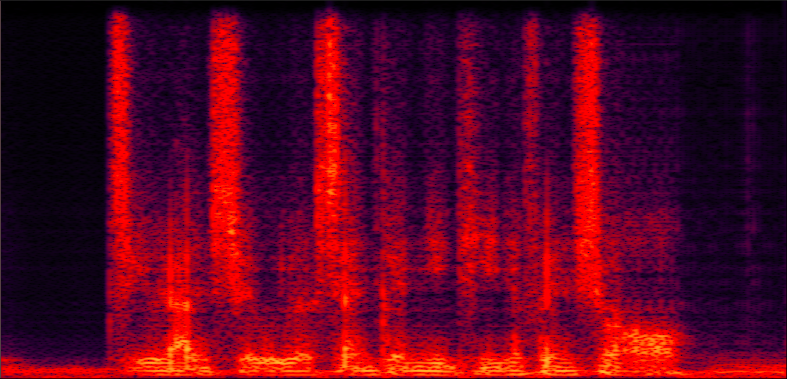
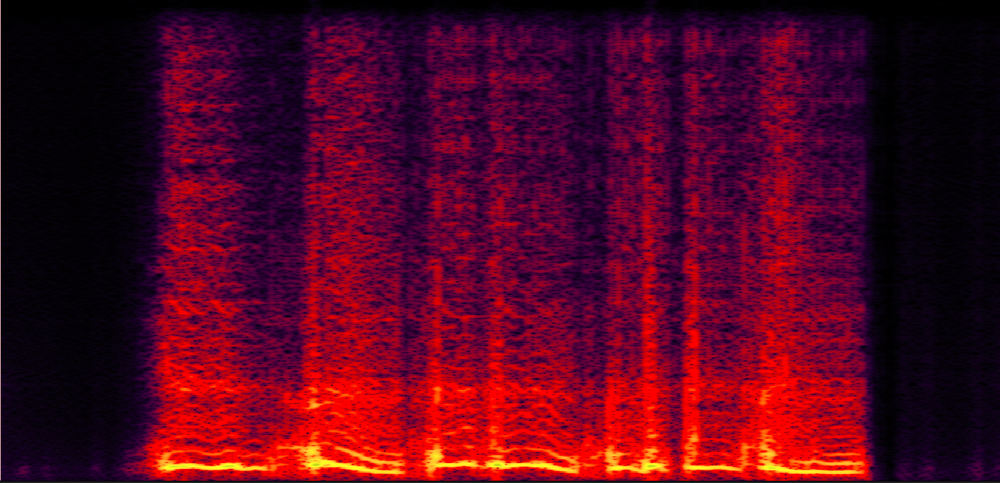
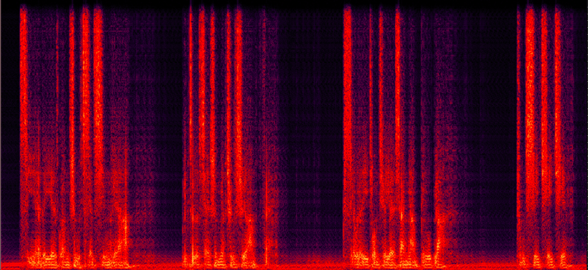
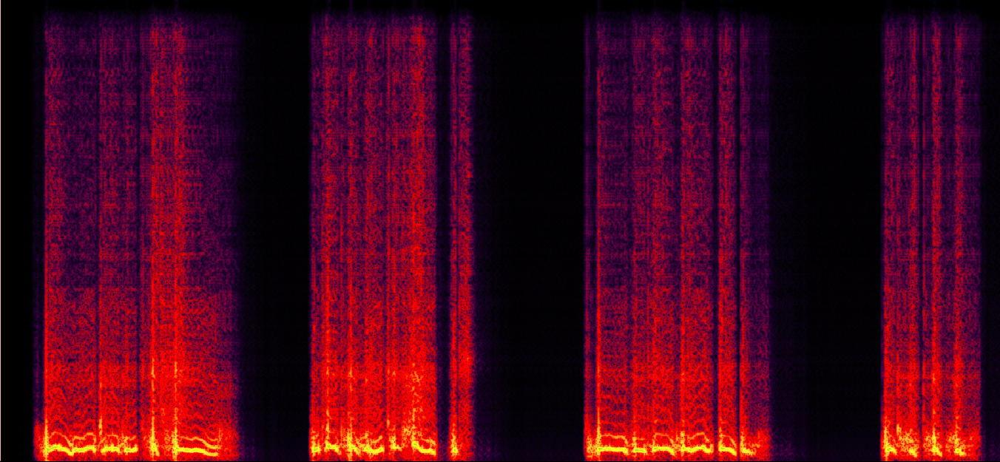
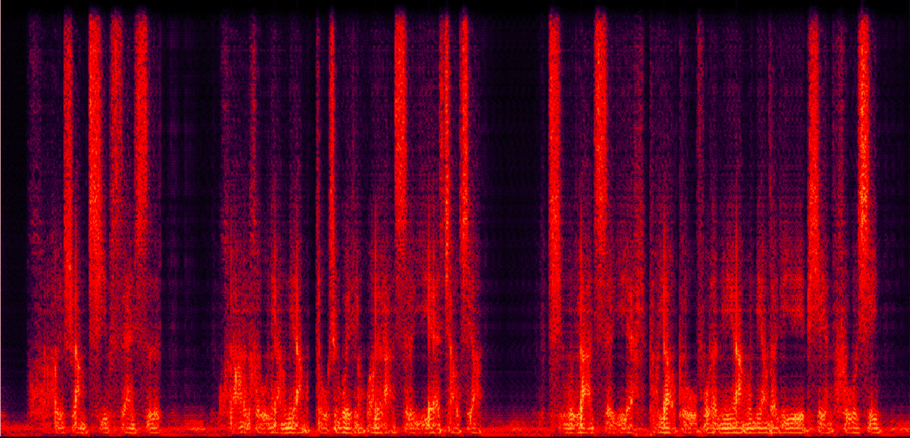
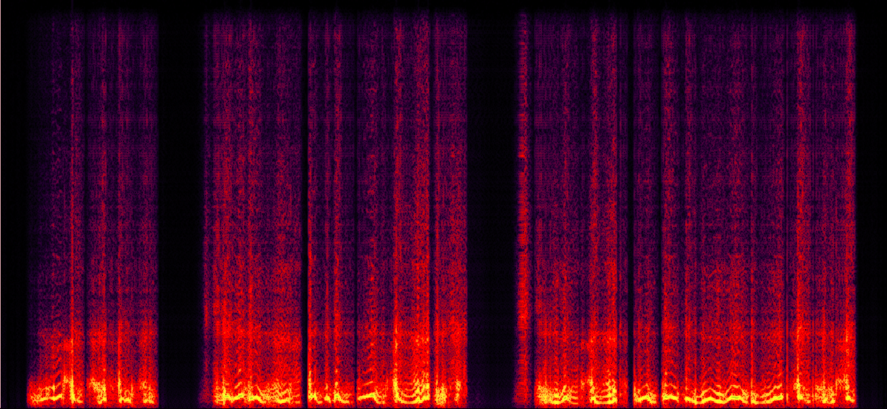
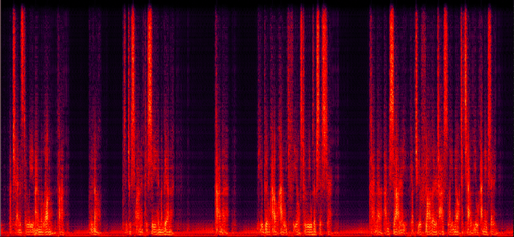
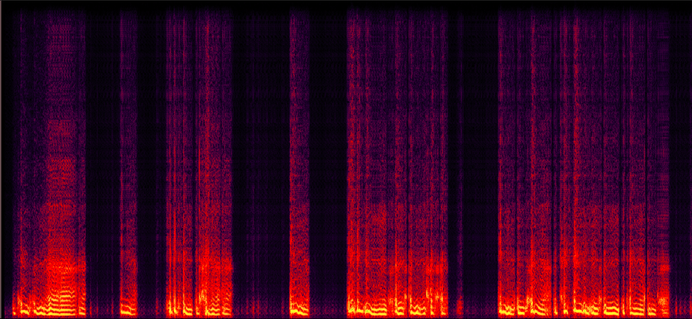

Recent codec-based language models~(LMs) have revolutionized text-to-speech~(TTS). However, their continuation-based adherence to the tight coupling of speaker timbre and prosody inherent in the codec tokens prevents independent control. Recent efforts attempt to break this entanglement via codec design, but insufficient decoupling remains a critical bottleneck. To tackle this problem, we propose DisCo-Speech, a zero-shot controllable TTS framework that enables prosody control and voice cloning via a disentangled speech codec (DisCodec) and an LM-based generator. The crucial design, DisCodec, contains two core stages: 1) Tri-factor disentanglement: using parallel encoders and hybrid correlation-based losses, it explicitly decouples speech into content, prosody, and timbre subspaces; 2) Fusion and reconstruction: given the learned subspaces, DisCodec decoder further fuses content and prosody into unified content-prosody tokens suitable for LM usage, while jointly optimizing reconstruction quality to resolve the inherent disentanglement-reconstruction conflict. With this design, the LM performs contextual prosodic continuation from a style prompt while the decoder handles target timbre injection, forming DisCo-Speech's zero-shot control paradigm. Experiments show that DisCo-Speech not only matches state-of-the-art models in voice cloning but surpasses them in zero-shot prosody control. By resolving the core entanglement at codec level, DisCo-Speech paves the way for a flexible speech interface.
Fig 1: The structure and two-stage training of DisCodec.
Fig 2: The overview of DisCo-Speech.
| GroundTruth | DisCodec | GroundTruth | DisCodec | ||
|---|---|---|---|---|---|
| Angry | Sad | ||||
| Cry | Fear | ||||
| Disgust | Happy | ||||
| Surprise | Calm | ||||
| Accent | Whisper | ||||
| English | Style | ||||
| Style | Accent |
| Source-Speaker-Prompt | Target-Speaker-Prompt | DisCodec Result |
|---|---|---|
| Prompt-Audio | Text | Disentangled Content | Content Visual | Disentangled Prosody | Prosody Visual | Reconstruction |
|---|---|---|---|---|---|---|
|
|
居然是我先和你提的分手！ |
|

|
|

|
|
|
|
今夜的月光如此清亮，不做些什么真是浪费，随我一起去月下漫步吧，不许拒绝 |
|

|
|

|
|
|
|
皇上请三思，皇后娘娘都是万岁爷着想，请万岁爷不要辜负了娘娘的一片苦心. |
|

|
|

|
|
|
|
A chance to leave him alone, but...No.She just wanted to see him again.Anna...You don't know how it feels to lose a sister.Anna, I'm sorry, but your father asked me not to tell you anything. |
|

|
|

|
|
| Audio-Prompt | Text | DisCo-Speech | IndexTTS2 | CosyVoice2 | SparkTTS | Vevo |
|---|---|---|---|---|---|---|
| 家居养娃的李娜又重新出现在媒体大众的面前 | ||||||
| These are two of only three known formations to have dinosaur fossils in Antarctica. | ||||||
| The man looked at him without responding. | ||||||
| 胡萝卜凉拌或炒鸡蛋味道都是棒极的，胡萝卜骄傲地说。 | ||||||
| rodolfo arrived at his own house without any impediment and leocadia's parents reached theirs heart broken and despairing | ||||||
| 那些袖珍衣服挂在架子上，远远看上去就像一幅画，可漂亮了。 | ||||||
| 那些袖珍衣服挂在架子上，远远看上去就像一幅画，可漂亮了。 | ||||||
| 那些袖珍衣服挂在架子上，远远看上去就像一幅画，可漂亮了。 |
| Timbre-Audio-Prompt | Prosody-Audio-Prompt | Text | DisCo-Speech | Vevo | IndexTTS2 |
|---|---|---|---|---|---|
| 这一天，天上的乌云又多又厚又沉，整个森林暗得就像黑夜一样。 | |||||
| 我站在人海中，却感觉比任何时候都要孤独。 | |||||
| 有些人走了就再也没有回来过，所以等待和犹豫是这个世界上最无情的杀手。 | |||||
| 有些人走了就再也没有回来过，所以等待和犹豫是这个世界上最无情的杀手。 | |||||
| 有些人走了就再也没有回来过，所以等待和犹豫是这个世界上最无情的杀手。 | |||||
| 有些人走了就再也没有回来过，所以等待和犹豫是这个世界上最无情的杀手。 | |||||
| 有些人走了就再也没有回来过，所以等待和犹豫是这个世界上最无情的杀手。 | |||||
| 有些人走了就再也没有回来过，所以等待和犹豫是这个世界上最无情的杀手。 |
| Audio-Prompt | Target Text | DisCo-Speech | Audio-Prompt | Text | DisCo-Speech |
|---|---|---|---|---|---|
| 只见那好汉纵身一跃，跳上房梁，身轻如燕，眨眼间便消失在茫茫夜色之中，无影无踪 | 每当深夜回想起那些往事，心中就会涌起一阵难以言喻的酸楚，久久无法平息 | ||||
| 那个娃儿做事总是毛毛躁躁的，喊他买个酱油都能把瓶子打烂，真的是让人脑壳痛 | 这事儿你就放一百个心，只要我答应了你，就算是天上下刀子我也给你办得妥妥的 | ||||
| 欲知这后事如何发展，且听我喝口茶润润嗓子，咱们下回分解再细细道来 | 我只是不想看到你因为这种小事而丢人现眼，才不是特意过来帮你的，你可千万不要想多了 | ||||
| 这种极不负责任的态度彻底激怒了我，我要求你立刻给出一个合理的解释 | 对不起，都是我的错，如果当初我能再小心一点，就不会发生这样的悲剧了 | ||||
| 今天的包包真的好重哦，你能不能帮人家提一下嘛，你最好了 | 能够在这个项目中与如此优秀的团队并肩作战，并取得这样的成绩，我感到由衷的荣幸 | ||||
| 从前有一个勇敢的小裁缝，他凭着自己的智慧和勇气，战胜了强大的巨人，赢得了公主的芳心 | 比赛已经进入了最后的伤停补时阶段，留给红队的时间已经不多了，他们必须发起最后的总攻才能挽回败局 | ||||
| 时光荏苒，岁月如梭，虽然我们都已经不再年轻，但那份纯真的友谊却历久弥新 | 今晚的月色如此迷人，你难道不想放下所有的戒备，和我一起探索这个世界未知的快乐吗？ |
| Timbre-Audio-Prompt | Prosody-Audio-Prompt | Text | DisCo-Speech | Timbre-Audio-Prompt | Prosody-Audio-Prompt | Text | DisCo-Speech |
|---|---|---|---|---|---|---|---|
| 这家火锅店的味道确实霸道，特别是那个鸭肠，稍微烫一下就脆得很，口感简直没得说。 | 该实验项目的第二阶段测试将在所有必要条件均得到满足后，按照既定流程开始执行。 | ||||||
| 气象局的最新报告指出，未来四十八小时内，本地区的降雨概率将维持在百分之二十以下。 | 你的行为严重违反了我们的约定，这种破坏信任的做法是绝对无法被原谅的 | ||||||
| 谁稀罕你的关心啊，我一个人过得好好的，才不需要你在旁边指手画脚 | 你们所谓的努力在我看来不过是徒劳的挣扎，差距从一开始就已经注定了 | > | |||||
| 人家真的不是故意的，你就不要再生气了嘛，笑一个给我看看好不好 | 小心一点，那个角落里好像安装了窃听器，我们说话的声音必须再小一点。 | ||||||
| 你在我们屋子里走路的时候，发现路程遥远，这是不足为怪的 | 为了确保数据的安全与一致性，所有用户在访问数据库之前都必须通过三层身份验证。 | ||||||
| 在一片茂密的原始森林深处，居住着一群拥有魔法的精灵，他们世世代代守护着一颗能够实现愿望的宝石 | 很久很久以前，天上有十个太阳，大地被烤得焦黑，直到一位名叫后羿的英雄拉开了神弓 |